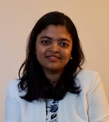

Sumaiya Nazeen is a postdoctoral research fellow in Khurana and Sunyaev labs led by Professors Vikram Khurana and Shamil Sunyaev at the Department of Biomedical Informatics at the Harvard Medical School and the Department of Neurology at the Brigham and Women's Hospital. She is also a remote associate member of the Broad Institute of MIT and Harvard. Her research focuses on the development of computational and statistical models for the interpretation of genetic foundation of complex human diseases. Computational integration of large-scale functional and comparative genomics datasets, can provide insight into the disease-associated sequence variants and their likely molecular roles. Sumaiya’s research aims at designing better tools for furthering such insight. Sumaiya was awarded the Sudarsky Scholar Award'23, Ludwig Center Fellowship'15, and International Fulbright Science & Technology Fellowship'12 for her research.
A native of Bangladesh, Sumaiya pursued her Bachelor’s degree from the Department of Computer Science and Engineering (CSE) at Bangladesh University of Engineering and Technology (BUET) and graduated summa cum laude receiving both Chancellor’s gold medal and Prime Minister’s gold medal. She completed her Master’s and Ph.D. in Computer Science under the supervision of Prof. Bonnie Berger at MIT in 2014 and 2019 respectively. Prior to coming to MIT, she served as a lecturer in the Department of CSE, BUET and taught a number of theory and sessional courses. She has a keen interest in music and enjoys travelling and reading.